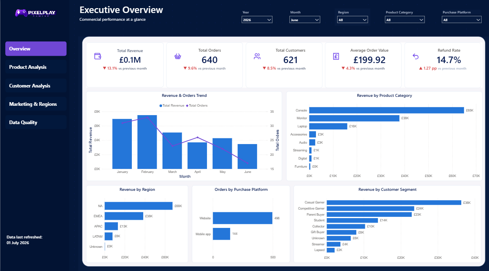
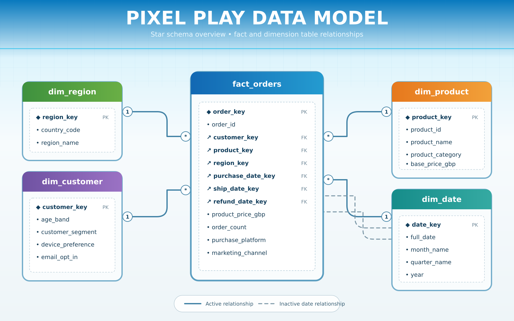
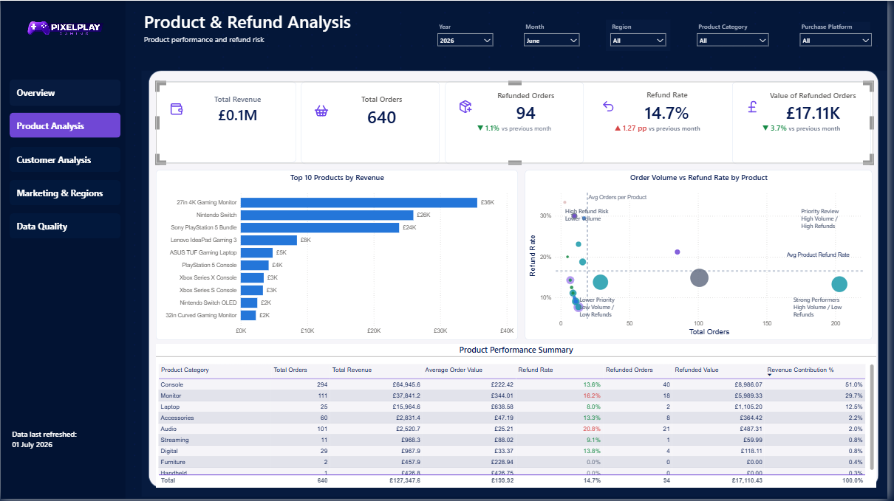
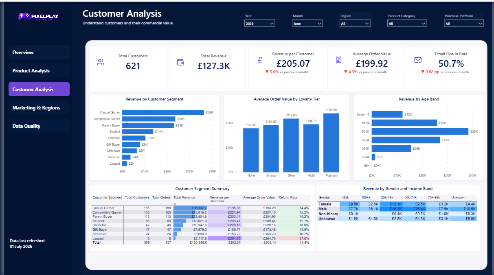
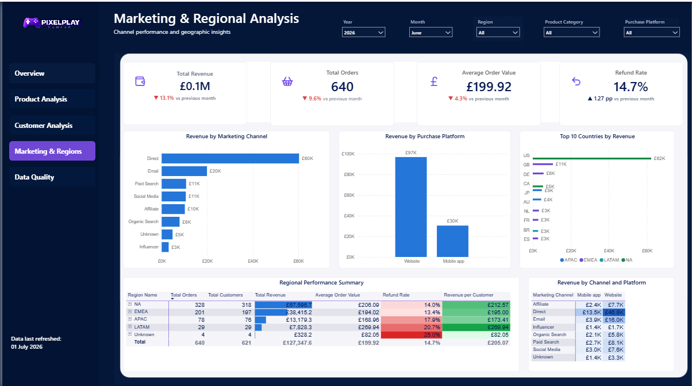
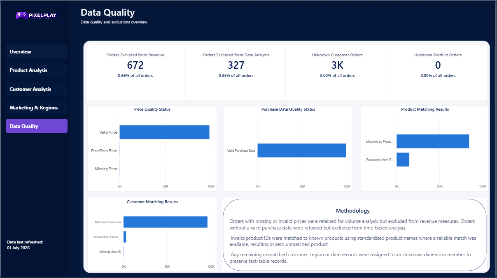

Featured project / Retail analytics
Pixel PlayMaking retail performance easier to understand.
I identified a four-month revenue decline, falling customer value and high refund rates in PixelPlay’s simulated retail data. I cleaned approximately 100,000 order records in SQL Server and built a five-page Power BI report to show where commercial teams should investigate first.
Independent portfolio project · Fictional gaming retailer · Simulated data
Explore the repository ↗Key findings
June 2026 at a glance
My dashboard shows the following results for June 2026 across all regions, product categories and purchase platforms.
Revenue declined after February
Revenue fell for four consecutive months after the February 2026 peak. June revenue decreased 13.1%, orders fell 9.6% and customers declined 8.5% compared with May.
My recommendation: break down the decline by category, region, segment and platform before drawing conclusions about its cause.
Direct and Website dominate
Direct generated approximately £60K in June revenue. Website purchases contributed around £97K, compared with £30K through the mobile app.
My recommendation: test whether Paid Search, Social Media and Affiliate can bring in more sales while continuing to support Direct and Website. Add marketing-spend data to check whether these campaigns are worth their cost.
Email reach is limited
Email opt-in was 50.7%, down 0.82 percentage points from May. Revenue per customer also decreased 5.0% to £205.07.
My recommendation: review how customers are invited to opt in to emails, keeping consent voluntary. Investigate what brings higher-value customers back before testing campaigns to encourage repeat purchases.
Revenue is concentrated
Console contributed 51.0% and Monitor 29.7% of June revenue: 80.7% combined. Monitor combines a substantial revenue contribution with a 16.2% refund rate, above the overall 14.7%.
Proposed action: investigate Audio’s 20.8% refund rate while also reviewing Console and Monitor because of their larger refunded values. Capture refund reasons before deciding on corrective action.
Customer value varies
Casual Gamer is the largest segment by displayed revenue. Platinum customers have the highest displayed average order value, while email opt-in is 50.7%.
Proposed action: explore customer needs and test retention ideas; the tier comparison alone does not establish that loyalty membership causes higher spending.
Regional growth needs context
The regional table reports refund rates of 20.7% for LATAM and 17.9% for APAC, compared with 14.0% for NA and 13.4% for EMEA.
Proposed action: investigate why refund rates are higher in LATAM and APAC before increasing marketing activity there.
Project overview
From fragmented extracts to consistent reporting.
PixelPlay Gaming is a fictional UK-based gaming hardware retailer selling consoles, computers, monitors and accessories through its website and mobile application. Acting as its Data Analyst for this portfolio project, I developed a centralised reporting solution from separate order, customer, product and regional extracts.
Inconsistent identifiers, missing values, invalid dates and unreliable geographical classifications made those extracts unsuitable for consistent reporting without preparation.
Complete reporting period
Average order value across the complete reporting period was £199.63. These overall figures are separate from the June 2026 findings and dashboard views on this page; revenue and counts are rounded.

The business question
Where is performance changing?
I structured the analysis around the decisions each team needed to make: how revenue and orders were changing, which products and customers contributed most, and where refund risk required further investigation.
My objective was to provide consistent KPIs, support detailed analysis and make data-quality exclusions visible. The final report contains five connected pages: Executive Overview, Product & Refund Analysis, Customer Analysis, Marketing & Regional Analysis and Data Quality Summary.
My approach
Prepare. Model. Communicate.
SQL preparation
Profiled source tables and standardised product, customer, geographic and date fields. Quality flags preserve usable transactions while excluding unreliable values from the measures they affect.
Reporting model
Organised orders into a central fact table with customer, product, region and date dimensions. Purchase dates support the primary time relationship; shipping and refund dates remain available separately.
Power BI reporting
Created DAX measures and dashboard views for sales, customers and refunds, with filters that let a reader move from an overview into a particular market or category.
Explore the data model

Technical detail
How I made the reporting consistent
Profiling, cleaning and eligibility rules
I checked row counts, distinct identifiers, missing values, duplicate records, date sequences, prices and relationships before transforming the data. I preserved the raw tables and standardised dates, numeric GBP prices, text fields, customer attributes and regional classifications in SQL Server.
I used identifier checks and ROW_NUMBER() to identify repeated records, converted country codes such as UK to GB and USA to US, and recovered product identifiers only where a reliable standardised-name match was available.
- Missing, invalid or zero prices: retained for eligible volume analysis, excluded from revenue.
- Invalid purchase dates: excluded from time-based analysis.
- Shipping or refund dates before purchase: flagged for the relevant analysis.
- Unmatched customers, regions and dates: assigned to Unknown dimension members.
These rules preserved usable information instead of removing every incomplete transaction.
Validation and data-quality results
I compared row counts across raw, cleaned and final tables, checked duplicates and dimension relationships, and reconciled SQL KPIs with Power BI measures. I also tested dashboard filters and checked that Unknown members preserved unmatched transactions.
- 672 orders (0.68%) excluded from revenue.
- 327 orders (0.33%) excluded from date analysis.
- Approximately 3,000 orders (3.00%) assigned to the Unknown customer member.
- No orders left with an Unknown product.
The final SQL and Power BI KPI totals were reconciled, with exclusions documented on the Data Quality page.
Star schema, SQL and DAX
I built fact_orders with customer, product, region and date dimensions. One-to-many relationships filter the fact table from the dimensions. The purchase-date relationship is active; shipping and refund date relationships are inactive.
My SQL uses CTEs, CAST, CASE, joins, conditional aggregation and window functions for cleaning, ranking, contribution analysis and validation.
DAX measures reuse the SQL eligibility rules. Average order value divides revenue by revenue-eligible orders, while time comparisons require a valid purchase date. The revenue month-on-month measure returns a result only when one year and one month are selected, avoiding ambiguous comparisons across multiple periods.
Revenue MoM % =
IF(
HASONEVALUE(dim_date[year])
&& HASONEVALUE(dim_date[month_name]),
DIVIDE(
[Total Revenue] - [Revenue Previous Month],
[Revenue Previous Month]
),
BLANK()
)I used DIVIDE to handle zero or unavailable previous-month revenue safely. Consistent slicers, navigation buttons, conditional formatting and cross-filtering help readers move between the five report pages.
Dashboard views
From the headline to the detail
{kind=link}

{kind=link}

{kind=link}

{kind=link}

Project outcome
A reporting process with visible quality controls.
I transformed separate operational extracts into a validated SQL star schema and a five-page Power BI dashboard. The report provides consistent KPIs and supports investigation by time, product, customer, region and purchase platform.
The project demonstrates my ability to connect SQL preparation, data modelling, DAX and visual reporting with stakeholder questions. Data-quality rules remain visible in the dashboard so readers can understand which records contribute to each measure.
Limitations & evidence
Keep the evidence in context.
The data-quality view reports 672 orders excluded from revenue and 327 from date analysis. Those exclusions affect different measures; they should not be added together as a count of unique rejected orders.
I filtered the Unknown segment out of the customer segment table. The headline cards include it, so the table and cards cover different customer groups. I have used the more detailed customer and regional revenue figures here because the executive card rounds revenue to £0.1M.
I treated small groups cautiously: the Lapsed segment’s 37.5% refund rate involved only eight customers, while the Unknown region’s 25.0% rate involved only four orders. Neither was treated as a reliable wider trend.
This analysis helped me identify areas for further investigation. Without product costs, marketing spend or refund reasons, I cannot assess profitability, marketing return or the causes of refunds. My recommendations are proposed next steps; their impact has not been measured.
The figures on this page come from my Power BI report, refreshed on 1 July 2026. My SQL scripts, project documentation and report are available in the PixelPlay Analytics repository.